EtherCAT Slave |
 |

|
EtherCAT Slave |
|
|
This example covers how to load an ESI File to the SDK and how to enable the CiA 402 device profile.
ecSlvCiA402.c
ecSlvCiA402.h
ESL_cia402Demo.c
ESL_cia402Demo.h
ESL_cia402Obd.c
ESL_cia402Obd.h
EtherCAT_Slave_CiA402.c
This example configures a 3 axes motor control application. If the device or the ESI file (EtherCAT Slave Information) does not support the CiA 402 device profile, the subsequent registration calls should be disabled. The following functions are implemented in ESL_cia402Demo.c.
Motion control is done in this function. The control of modes CSP, CSV or CST is shown.
The function contains an implementation of the CiA 402 State Machine (although an external one can be registered). This state machine works alongside the CiA 402 application. The application reads the control object (0x6040) and writes the status object (0x6041). The application activates the axis and checks if there is any error pending. If an error is pending then it calls to transition actions to resolve the error and clears the error status if required.
If the CiA 402 State machine changes to an error state this function is called. It is used to notify the error, not to take any action.
The example starts by initializing operating system (OSAL) and hardware abstraction layers (HWAL). The EtherCAT functionality itself is implemented within the EC_SLV_APP_loopTask that is started from the main application entry point, both are implemented in EtherCAT_Slave_ESI_Parser.c.
EC_SLV_APP_loopTask starts with the initialization of the GPIO driver and the configuration of the PHY and LED pins in the function EC_SLV_APP_initBoardFunctions in ecSlvESI.c.
Next PHY parameters, such as address, polarity and RX link are configured in EC_SLV_APP_registerStacklessBoardFunctions. The KUNBUS EtherCAT SDK supports Texas Instruments TLK105, TLK110 and Microchip KSZ8041NL PHYs by default. Alternative PHYs may be used. In this case the SDK user has to implement and register the functions to handle the new PHYs. Use the ESL_phyLibTlk110 sources as reference to implement your own PHY driver.
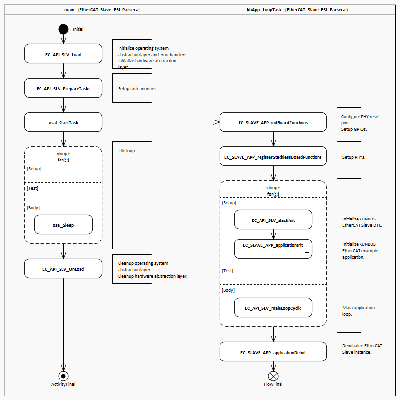
td |
Before entering the main stack loop, the example application itself is initialized in EC_SLV_APP_applicationInit. This function creates a new EtherCAT Slave device instance, registers a board status LED callback, sets vendor ID, product code and name, revision number, etc.
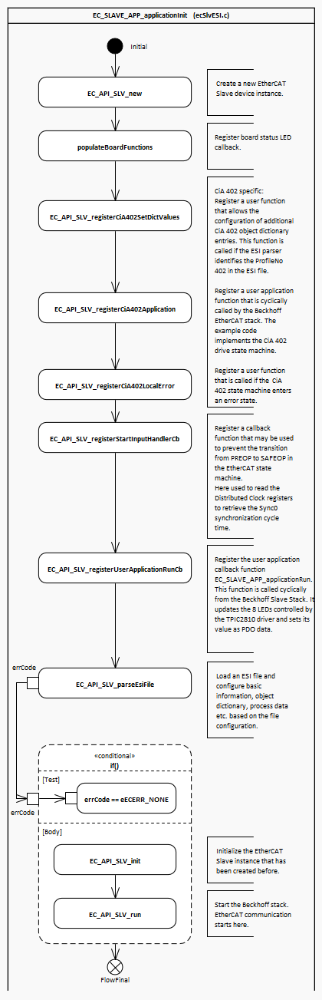
td |
After the basic initialization, EC_SLV_APP_applicationInit continues with the setup of the CiA 402 example drives and motion control example.
CiA402 State Machine or Finite State Automation (FSA) is independent to the EtherCAT State Machine (ESM) and defines internal and external behaviour for each state. The state of the drive determines which commands are accepted and whether high power is applied. States are changed when a control-word from the host-controller is received. They can also be changed due to internal events. The current state is indicated by the status-word. The control-word and different command values (e.g. velocity) are mapped into default RxPDOs (receive process data objects). The status-word and different actual values (e.g. position) are mapped into TxPDOs.
For a detailed description of the state machine transition please refer to the chapter 5.1 of the ETG6010 CiA402 implementation directive.
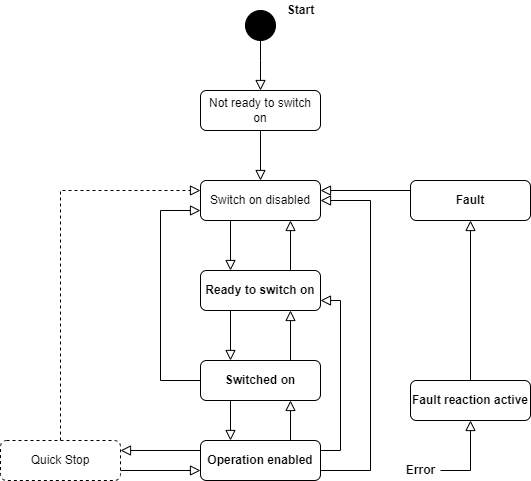
td |
The control object 0x6040 is used to request state changes on the CiA402 state machine. The control commands are coded by bits.
| Bit | Description |
|---|---|
| 0 | Switch on |
| 1 | Enable voltage |
| 2 | Quick Stop |
| 3 | Enable Operation |
| 4-6 | Operation mode specific |
| 7 | Fault reset |
These defines are available to transition between different states.
| Define | Value | Description |
|---|---|---|
| CONTROLWORD_COMMAND_SHUTDOWN | 0x0006 | Shutdown command |
| CONTROLWORD_COMMAND_SWITCHON | 0x0007 | Switch on command |
| CONTROLWORD_COMMAND_SWITCHON_ENABLEOPERATION | 0x000F | Switch on and enable command |
| CONTROLWORD_COMMAND_DISABLEVOLTAGE | 0x0000 | Disable voltage command |
| CONTROLWORD_COMMAND_QUICKSTOP | 0x0002 | Quickstop command |
| CONTROLWORD_COMMAND_DISABLEOPERATION | 0x0007 | Disable operation command |
| CONTROLWORD_COMMAND_ENABLEOPERATION | 0x000F | Enable operation command |
| CONTROLWORD_COMMAND_FAULTRESET | 0x0080 | Fault reset command |
The status object 0x6041 is used to get the state of the CiA402 state machine.
| Bit | Description |
|---|---|
| 0 | Ready to switch on |
| 1 | Switched on |
| 2 | Operation enabled |
| 3 | Fault |
| 4 | Voltage enabled |
| 5 | Quick Stop |
| 6 | Switch on disabled |
These defines are available to interpret the FSA states.
| Define | Value | Description |
|---|---|---|
| STATUSWORD_STATE_NOTREADYTOSWITCHON | 0x0000 | Not ready to switch on |
| STATUSWORD_STATE_SWITCHEDONDISABLED | 0x0040 | Switched on but disabled |
| STATUSWORD_STATE_READYTOSWITCHON | 0x0021 | Ready to switch on |
| STATUSWORD_STATE_SWITCHEDON | 0x0023 | Switched on |
| STATUSWORD_STATE_OPERATIONENABLED | 0x0027 | Operation enabled |
| STATUSWORD_STATE_QUICKSTOPACTIVE | 0x0007 | Quickstop active |
| STATUSWORD_STATE_FAULTREACTIONACTIVE | 0x000F | Fault reaction active |
| STATUSWORD_STATE_FAULT | 0x0008 | Fault state |
These modes are recommended to be supported by the drives:
| Operation mode | Code |
|---|---|
| Profile position mode | 1 |
| Velocity mode | 2 |
| Profile velocity mode | 3 |
| Torque profile mode | 4 |
| Homing mode | 6 |
| Interpolated position mode | 7 |
| Cyclic synchronous position mode | 8 |
| Cyclic synchronous velocity mode | 9 |
| Cyclic synchronous torque mode | 10 |
| Cyclic synchronous torque mode with commutation angle | 11 |
The operation mode object 0x6060 is used to request an operation mode.
The operation mode display object 0x6061 is used to get the current operation mode.
The target position object 0x607A is used to request the target position.
The position actual value object 0x6064 gets the drive's current position.
The target velocity object 0x60FF is used to request the target velocity.
The velocity actual value object 0x606C gets the drive's current velocity.
The target torque object 0x6071 is used to request the target torque.
The torque actual value object 0x6077 gets the drive's current torque.
These are the objects that must be written to the drive to command a specific operation.
| Index | Description |
|---|---|
| 0x6040 | Control Word |
| 0x6060 | Operation mode |
| 0x607A | Target position |
| 0x60FF | Target velocity |
| 0x6071 | Target torque |
These are the objects that must be read to get the current status of the drive.
| Index | Description |
|---|---|
| 0x6041 | Status Word |
| 0x6061 | Operation mode display |
| 0x6064 | Position actual value |
| 0x606C | Velocity actual value |
| 0x6077 | Torque actual value |
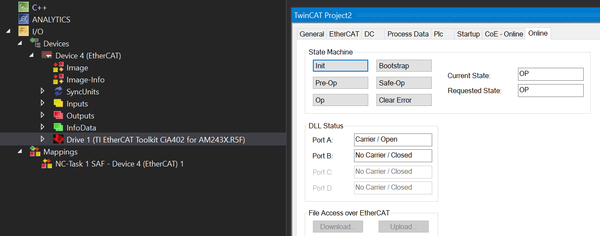
td |
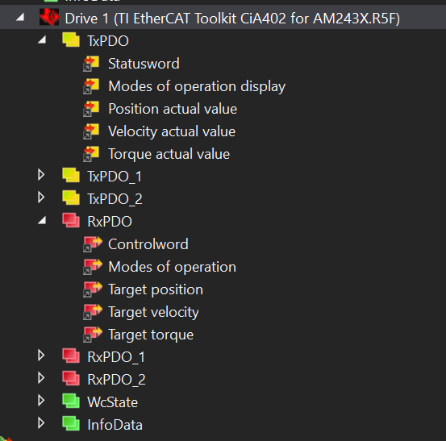
td |
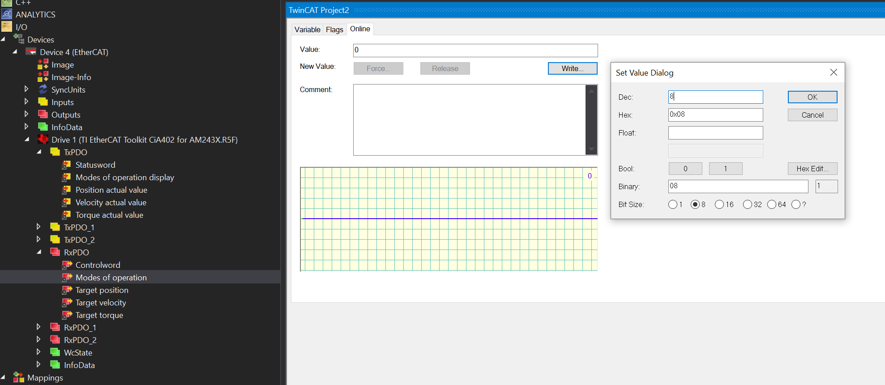
td |
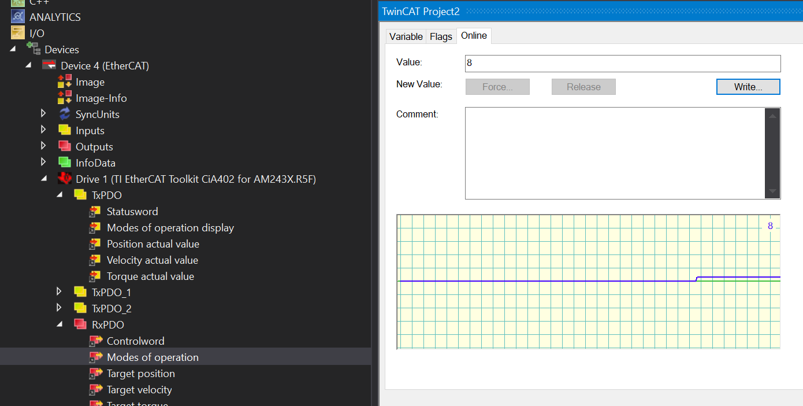
td |
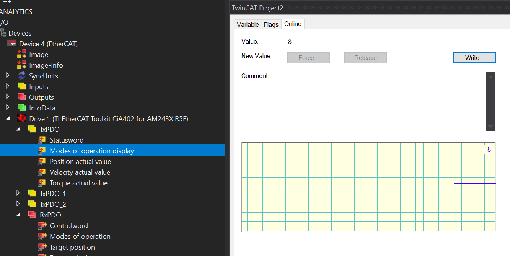
td |
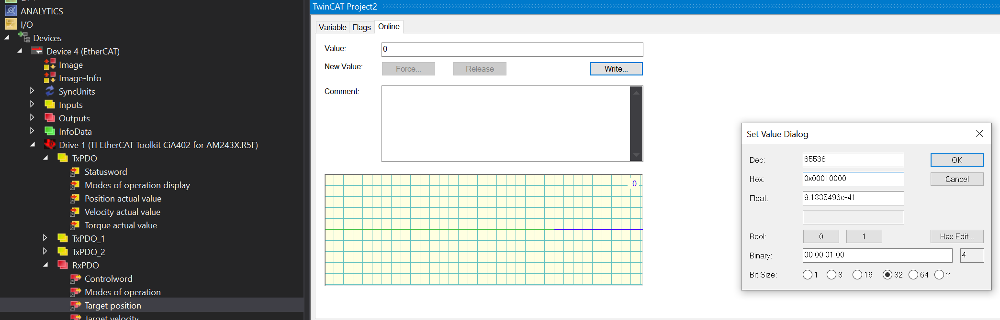
td |
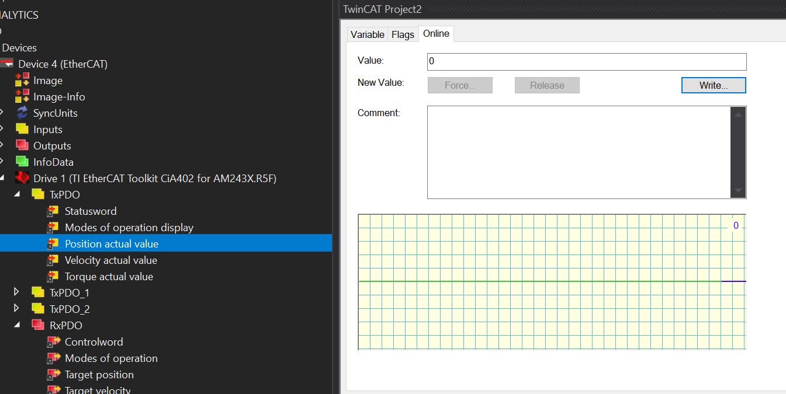
td |
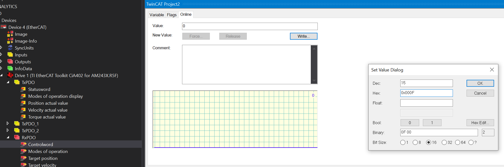
td |
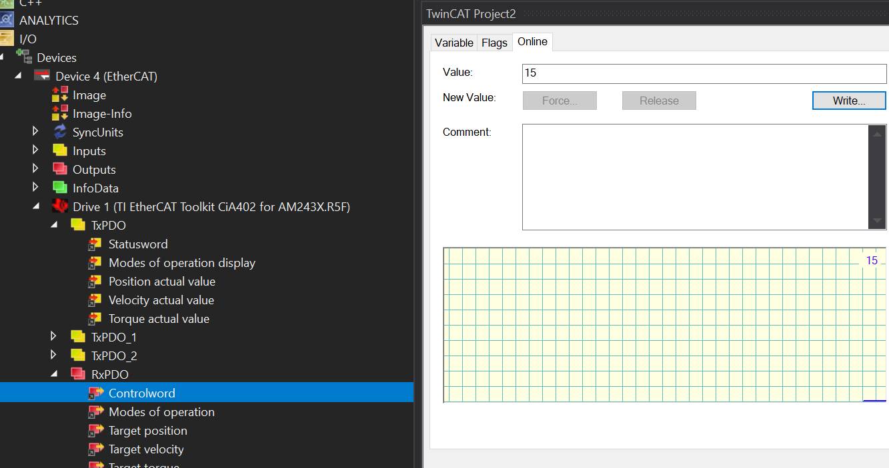
td |
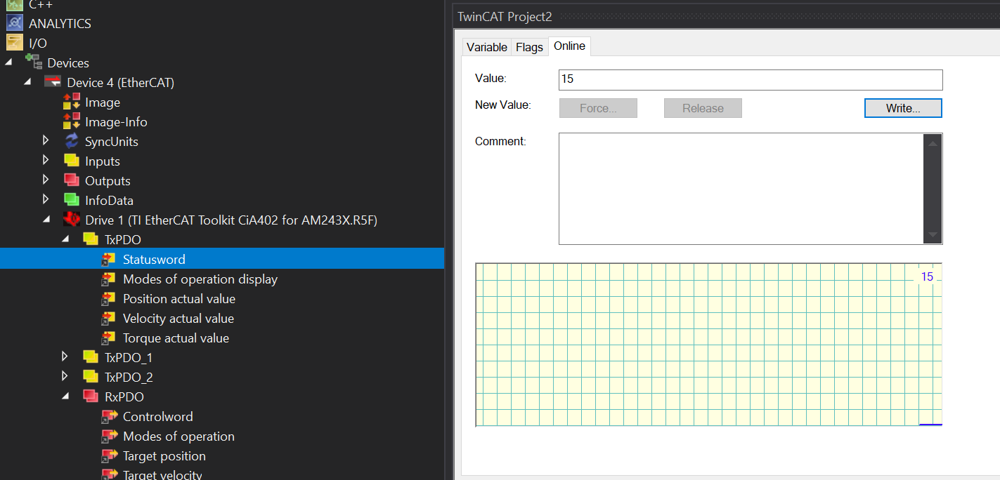
td |
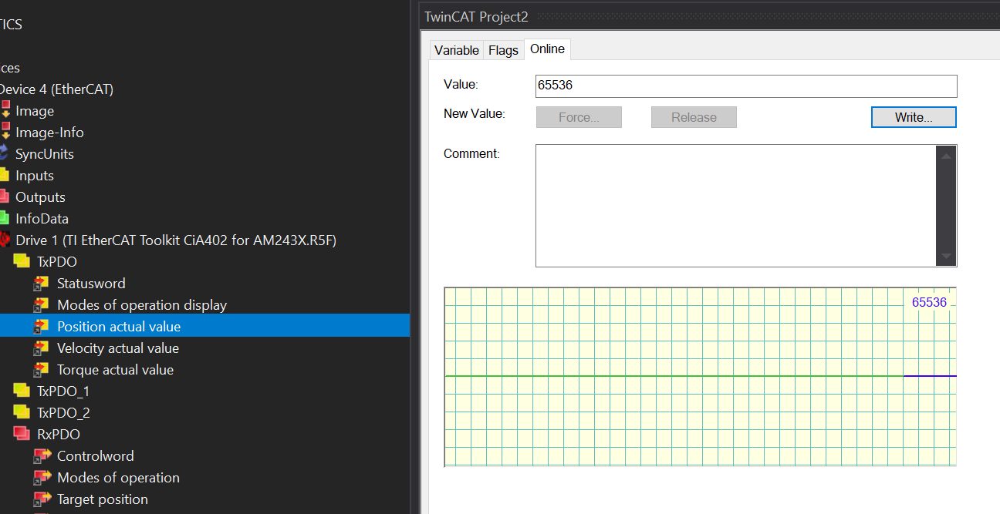
td |
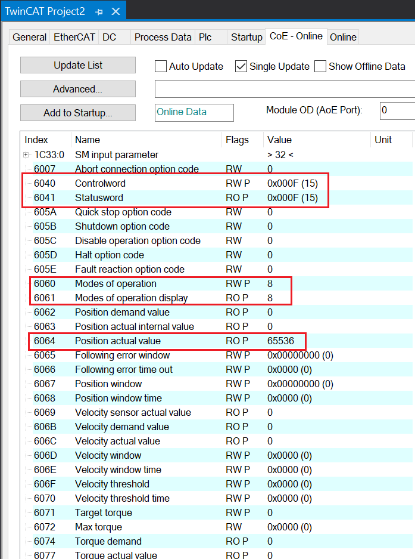
td |
The rest of the axes and other operation modes can be configured following the same steps described above. Furthermore, there are more objects used for the drive application but this example covers only the basic configuration. Please refer to the ETG6010 document for a detailed description of the CiA402 directive.
 1.9.8
1.9.8